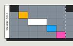
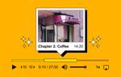

Mux Blog - Video technology and more
https://www.mux.com/blog
Mux builds powerful APIs for video encoding, hosting, streaming and data. Come see what we're up to, and let's build better video.
フィード

How Mux increased engineering velocity by 50%
Mux Blog - Video technology and more
Dive into how 6-week planning cycles helped Mux increase engineering velocity and quickly ship major product upgrades like 4K, AI-generated captions, and more.
4日前
Being a provider in a pirate’s world, or: how to not get your service blocked by an entire country
Mux Blog - Video technology and more
From content creators to infrastructure providers, learn about the impact of piracy across the world of streaming video.
4日前

AI-generated chapters for your videos with Mux Player
Mux Blog - Video technology and more
Chaptering your video just got easier. Learn how to use auto-generated captions and AI to add chapters to your videos in Mux Player.
5日前
What is perceptual quality?
Mux Blog - Video technology and more
Learn about perceptual quality (PQ) in video and how metrics like PSNR, SSIM, and VMAF help you measure PQ.
10日前
What is DRM?
Mux Blog - Video technology and more
Explore the basics of DRM (Digital Rights Management) and how it protects video content from piracy. Learn when to use DRM and the tradeoffs involved.
13日前

Patience overflow: a debugging tale old as time
Mux Blog - Video technology and more
Read about how we found and fixed a tricky SRT live streaming bug and the lessons we (re)learned about handling timestamp edge cases.
17日前
How to build video activity notifications in Next.js
Mux Blog - Video technology and more
This post explores how you can use Mux and Knock to build out scaleable, thoughtful, and battle-tested notifications for your video apps.
1ヶ月前
How to build a media player with Tailwind CSS and Web Components
Mux Blog - Video technology and more
Tailwind CSS and Web Components are incredible tools for rapidly building in HTML. Let's see how, by building an audio player with Media Chrome.
1ヶ月前
Native players for native apps: Mux Player for Android and iOS is GA
Mux Blog - Video technology and more
Mux Player for iOS and Android is now GA. Use native mobile players in your applications with ease.
1ヶ月前
After the money’s gone, or, a deep dive into the total cost of ownership of video
Mux Blog - Video technology and more
Explore the total cost of building an in-house video solution and how using Mux can save you ~50%.
1ヶ月前
Migrate your video files between video hosting services for free
Mux Blog - Video technology and more
Migrate your video content between the world’s most trusted video providers with ease. Truckload helps you move your videos to your new video platform home.
1ヶ月前
Building UGC video features with Uscreen
Mux Blog - Video technology and more
Watch as Nick, CTO of Uscreen, and Matt chat about how Uscreen uses Mux to build UGC features for their creator community.
2ヶ月前
React 19 lets you write impossible components
Mux Blog - Video technology and more
What can you do with Server Components and Actions in React 19? Let’s talk about how React 19’s features are a big deal, even for a simple marketing site.
2ヶ月前
Clip me, baby, one more time: Introducing instant clipping
Mux Blog - Video technology and more
Introducing instant clipping: a new way to clip live streams and assets created from live streams with Mux at no extra cost.
2ヶ月前
Facebook just updated its relationship status with web components
Mux Blog - Video technology and more
Learn about React 19 introducing support for web components and what that means for React developers and web component authors.
2ヶ月前